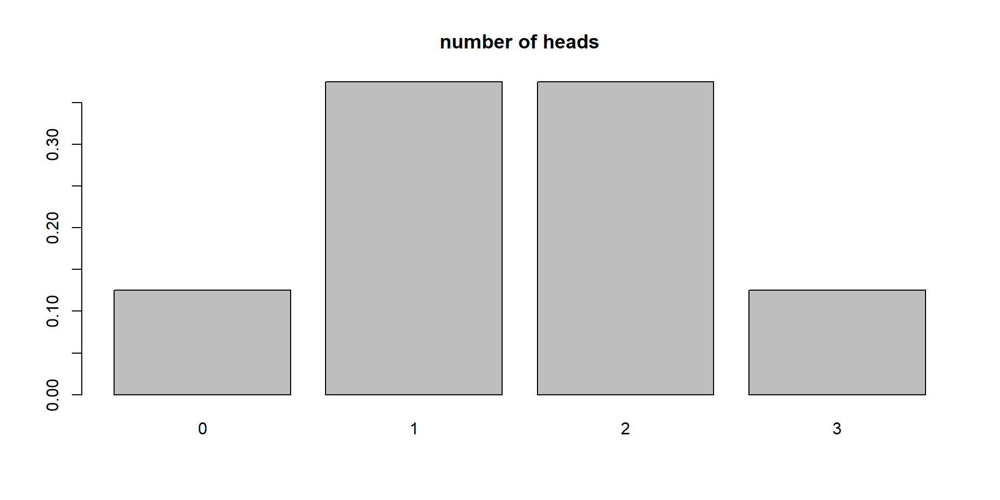
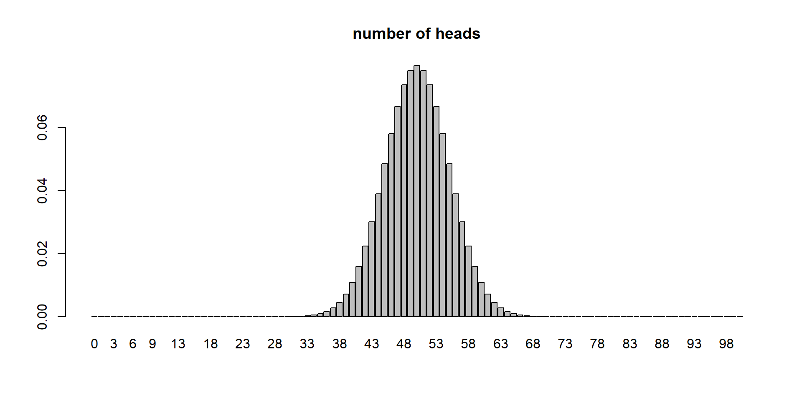
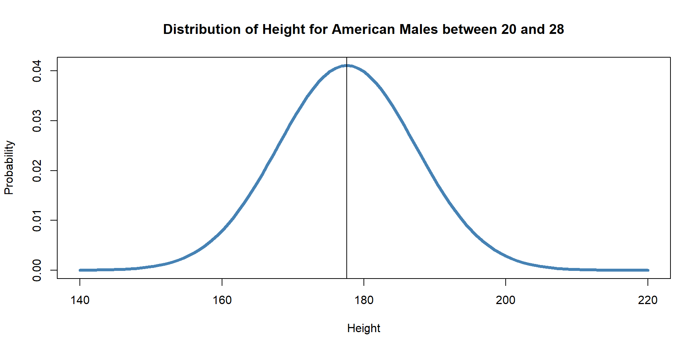
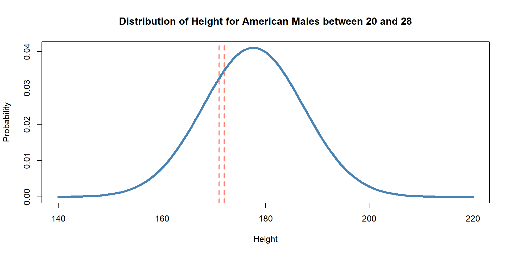
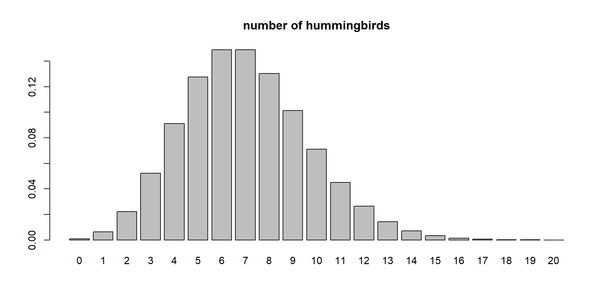
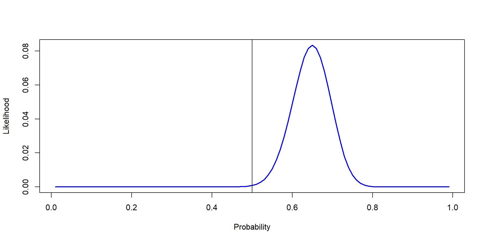
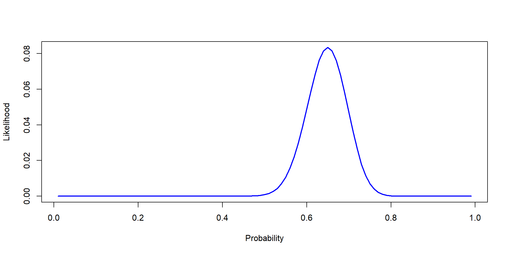

flowchart LR A[HEADS] --> B[HEADS] A --> C[TAILS] B --> D[HEADS] B --> E[TAILS] C --> F[HEADS] C --> G[TAILS]
Probability and Likelihood (step 1 out of 3)
What is probability?
Certainty that an event will happen
Example:
X = number of heads in 3 tosses
x = exactly 2 heads
\(\theta=0.5\) (probability)
\(P(X=x | \theta) = 3/8\)
\(P(\text{Number of heads in 3 tosses}= 2 | 0.5) = 3/8\)
flowchart LR A[HEADS] --> B[HEADS] A --> C[TAILS] B --> D[HEADS] B --> E[TAILS] C --> F[HEADS] C --> G[TAILS]
flowchart LR A[TAILS] --> B[HEADS] A --> C[TAILS] B --> D[HEADS] B --> E[TAILS] C --> F[HEADS] C --> G[TAILS]
3 tosses
Probability of 1 head?
Probability of 3 heads?
Probability of 0 heads?
We treat \(\theta\) as fixed (0.5)
We can actually estimate any probability as long as we know the parameters
Binomial distribution parameters: n and p
n is number of trials
\(P(X=x | \theta) = Y\)
\(P(successes = x | \text{p and n}) = Y\)
\(P(successes = 12 | \text{0.5 and 50}) = 0.0001078\)
\(P(successes \ge 57 | \text{0.5 and 100}) = 0.0966\)
We use dbinom. Like this: dbinom(x,n,p) Example: dbinom(12,50,0.5)
For \(\ge\) 57: sum(dbinom(57:n,n,p))


Probability and n!
Who can remember them?
Mean and sd (or variance)
For a population of males in the USA, these are the parameters:
\(\mu = 177.6cm\)
\(\sigma = 9.7cm\)

What is the probability of sampling a random man with a heigh of 172.85431 cm?
What is the probability of sampling one random man and him being between 170 and 171 cm?

By knowing the mean and sd we can plot any normal distibution
We can estimate any probability as well
Probability of observing X given the parameters
One parameter
\(\lambda\)
Represents both mean and sd
When \(\lambda = 7\) what is the probability of seeing 5 hummingbirds visit a flower?
\(P(X=5|\lambda =7)\)

Probability: Chance of an event occuring
Chance of data being something, given the parameters
The parameters do not change. For example, for a p of 0.5 we can estimate the prob of 0, 1, 2… 100 heads out of 100
Test your knowledge…
We cannot estimate it if we do not have the parameters!
We usually do not have them
It is what we are trying to estimate!!!!
If we had them, there would be no point on sampling/experiments
Examples:
Probability of infection (infection rate)
Yield of a crop
Annual sales
community composition
Data!
You are smart, so you knew we couldn’t estimate it! You decide to grab the coin, and do 100 flips.
You get 65 heads and 35 tails
What value of P (prob of heads) is more likely:
0.3
0.5
0.7
Likelihood of a parameter given our data
Probability: \(P(X=x|\theta)\)
x = data and \(\theta\) = parameter
Likelihood: \(\mathcal{L}(x|\theta = y)\)
Likelihood: \(\mathcal{L}(65|p= 0.3 \; \& \; n=100)\)
Likelihood: \(\mathcal{L}(65|p= 0.5 \; \& \; n=100)\)
Likelihood: \(\mathcal{L}(65|p= 0.7 \; \& \; n=100)\)
Likelihood: \(\mathcal{L}(65|p= 0.3 \; \& \; n=100)\)
Likelihood: \(\mathcal{L}(65|p= 0.5 \; \& \; n=100)\)
Likelihood: \(\mathcal{L}(65|p= 0.7 \; \& \; n=100)\)
Likelihood: \(\mathcal{L}(65|p= 0.3 \; \& \; n=100)\)
Likelihood: \(\mathcal{L}(65|p= 0.5 \; \& \; n=100)\)
Likelihood: \(\mathcal{L}(65|p= 0.7 \; \& \; n=100)\)
Likelihood: \(\mathcal{L}(65|p= 0.3 \; \& \; n=100)\)
Likelihood: \(\mathcal{L}(65|p= 0.5 \; \& \; n=100)\)
Likelihood: \(\mathcal{L}(65|p= 0.7 \; \& \; n=100)\)
[1] 4.273205e-13[1] 0.0008638557[1] 0.04677968 [1] 7.703225e-104 1.992063e-84 3.884481e-73 3.571358e-65 4.929663e-59
[6] 4.772511e-54 7.374228e-50 2.970735e-46 4.282059e-43 2.741123e-40
[11] 9.091081e-38 1.750311e-35 2.132713e-33 1.758769e-31 1.035226e-29
[16] 4.539569e-28 1.535868e-26 4.127038e-25 9.024029e-24 1.638853e-22
[21] 2.515609e-21 3.313036e-20 3.792499e-19 3.816341e-18 3.409459e-17
[26] 2.727838e-16 1.969634e-15 1.292261e-14 7.750912e-14 4.273205e-13
[31] 2.176051e-12 1.028019e-11 4.523399e-11 1.860408e-10 7.175152e-10
[36] 2.602570e-09 8.901681e-09 2.877953e-08 8.814231e-08 2.562323e-07
[41] 7.082912e-07 1.864766e-06 4.682851e-06 1.123170e-05 2.576014e-05
[46] 5.655635e-05 1.189753e-04 2.400149e-04 4.646673e-04 8.638557e-04
[51] 1.542997e-03 2.649119e-03 4.373180e-03 6.943193e-03 1.060361e-02
[56] 1.557780e-02 2.201417e-02 2.992165e-02 3.910718e-02 4.913282e-02
[61] 5.931182e-02 6.875851e-02 7.649566e-02 8.160685e-02 8.340469e-02
[66] 8.157530e-02 7.625895e-02 6.804079e-02 5.784834e-02 4.677968e-02
[71] 3.590570e-02 2.609661e-02 1.791259e-02 1.157630e-02 7.019775e-03
[76] 3.978485e-03 2.098032e-03 1.024198e-03 4.601262e-04 1.889469e-04
[81] 7.036278e-05 2.354392e-05 7.002111e-06 1.827232e-06 4.119694e-07
[86] 7.876283e-08 1.247985e-08 1.592788e-09 1.579556e-10 1.161994e-11
[91] 5.965119e-13 1.966976e-14 3.709060e-16 3.373223e-18 1.136123e-20
[96] 9.102708e-24 7.565670e-28 1.012012e-33 5.698078e-44
“Very Unlikely that it is fair”
Probability:
Likelihood

Likelihood is continuous
If you capture 5 raccoons with weights of 11.2, 12, 11.5, 12.8, 11.06 is it more likely that the population mean is 11.5 or 17?
If you get 80 heads in 100 tosses, is it more likely that p is 0.8 or 0.5
If you count insects per tree and find 77, 70, 75, 86, and 90 is it more likely that \(\lambda\) for insects per tree is 60, 80, or 120?
Likelihood is estimated!
\(\mathcal{L}(x|\theta = y)\)
And usually (and correctly): \(\mathcal{L}(\theta|data)\)
We use the probability density functions
\[ \Huge \mathcal{L}(\theta|data) \]
\[ \Huge P(data|\theta) \]
\[ \mathcal{L}(\theta|data) = P(data|\theta) \]
A different statistical framework
We have used frequentist so far
| Topic | Frequentist | Bayesian |
|---|---|---|
| Parameters | Fixed unknown | Random variable |
| Data | Random | Fixed |
| Inference | Based on a sampling distribution | Based on posterior |
| Output | P-value, Confidence intervals, betas | Credible intervals and posterior distribution |
| Computational needs | low | high |
Data, random? Yes…
\(y_i = \beta_0 + \beta_1 + \epsilon_i\)
Different way of looking at things… we will explore how
\[ \Huge P(\theta |data) = \frac{P(data|\theta) \times P(\theta)}{P(data)} \]
Challenge 1:
Challenge 2: